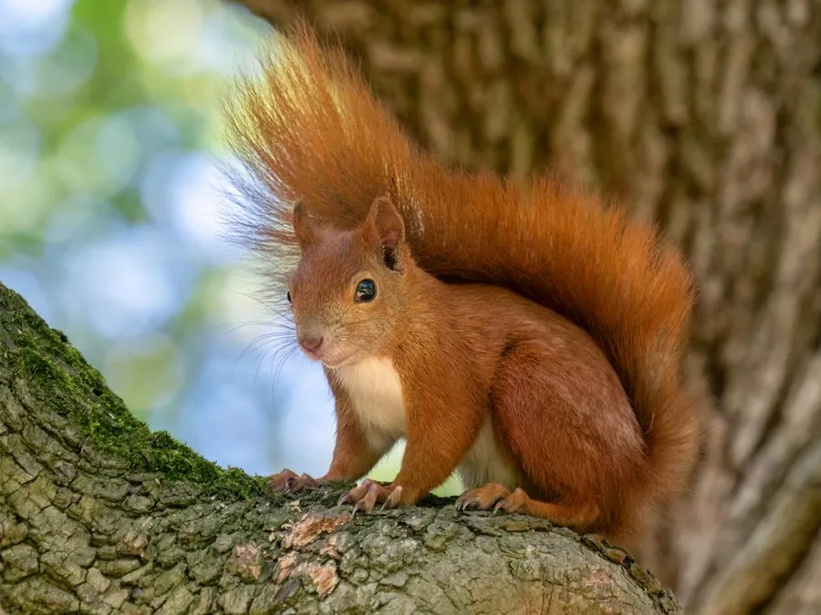

哺乳动物 · 动物界
松鼠 Sciurus vulgaris

欧亚大陆常见的树栖松鼠，耳端有长毛簇、尾巴蓬松，毛色从红棕到黑褐变化很大，有贮藏坚果的习性。
- 分类
- 门脊索动物门纲哺乳纲目啮齿目科松鼠科属松鼠属
- 栖息环境
- 针叶林、阔叶林与混交林，也常见于城市公园
- 地理分布
- 欧洲、亚洲北部，从英国到西伯利亚、中国东北和日本
- 保护级别
- IUCN 无危（LC）
物种志
欧亚红松鼠体长 19–23 厘米，尾长 15–20 厘米，体重 250–340 克。它的毛色变化很大，从红棕、栗褐到黑褐色都有，腹部白色；耳端有长长的毛簇，尾巴蓬松而长，约占体长的一半，用于平衡和保暖。
松鼠广泛分布于欧洲和亚洲的针叶林、阔叶林和混交林，从英国、欧洲大陆到西伯利亚、中国东北和日本。它主要在树上活动，以松子、榛子、橡子、嫩芽、果实和蘑菇为食，秋季会把坚果埋在地下贮藏，部分被遗忘的种子长成新树。松鼠白天活动，多单独觅食，善攀爬和跳跃。雌性妊娠期约 38–39 天，每年繁殖 1–2 次，每胎 3–6 仔，寿命野外约 3–7 年。松鼠整体被列为无危。
形态与习性
- 食性松子、榛子、橡子、嫩芽与蘑菇
- 体长19–23 cm，尾长 15–20 cm
- 体重250–340 g
- 寿命野外约 3–7 年
- 繁殖妊娠约 38–39 天，每胎 3–6 仔
- 毛色红棕至黑褐，腹部白色
趣味知识
- 松鼠耳端长有毛簇，尾巴蓬松，几乎和身体一样长。
- 它秋季埋藏坚果，遗忘的种子常长成新的树木。
- 英国的红松鼠因灰松鼠竞争和疾病而大幅减少。